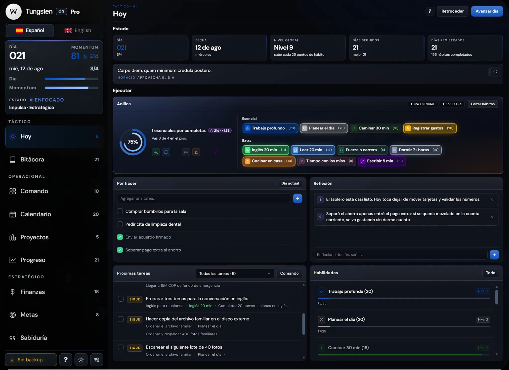
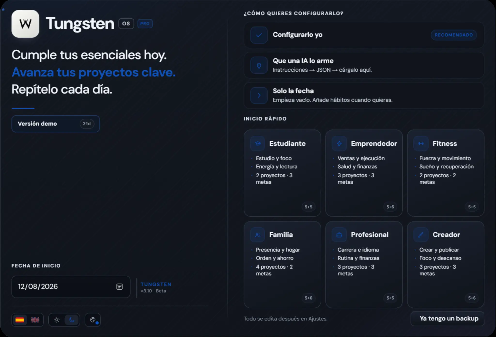
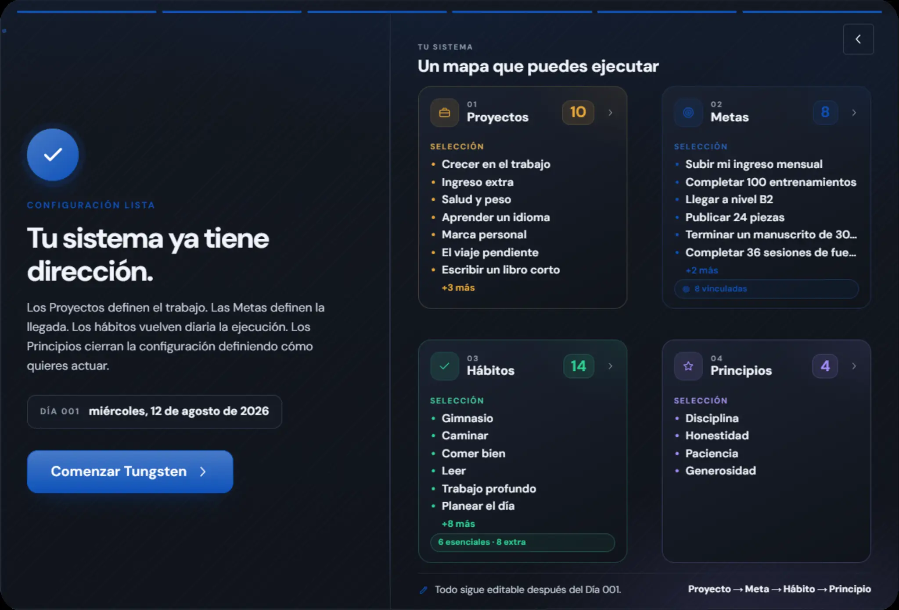
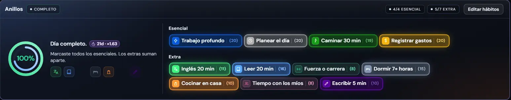
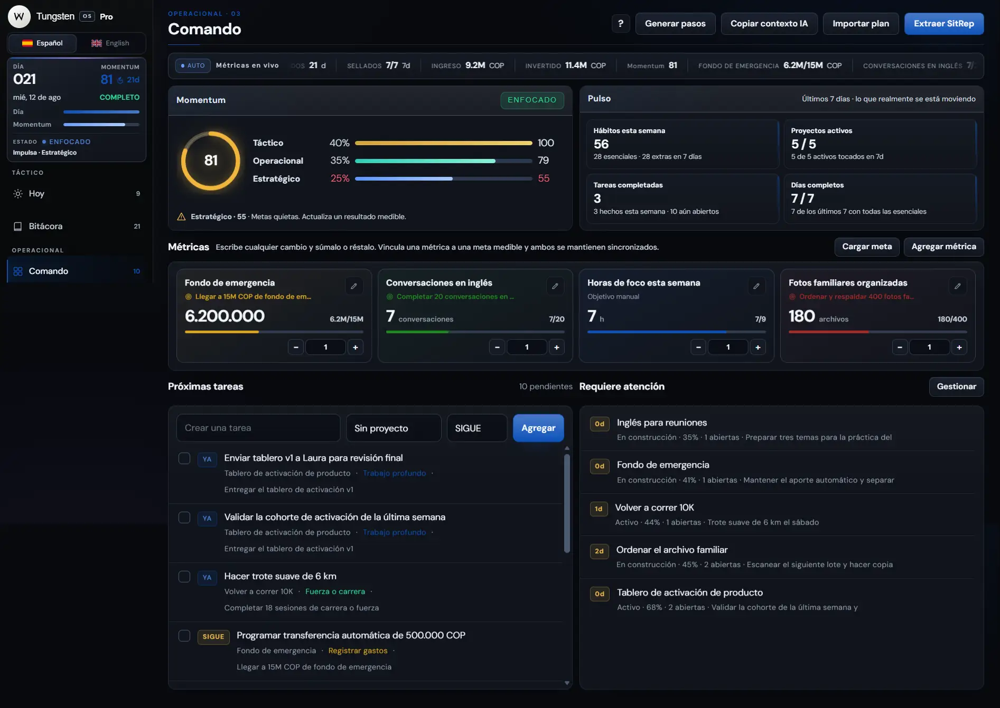
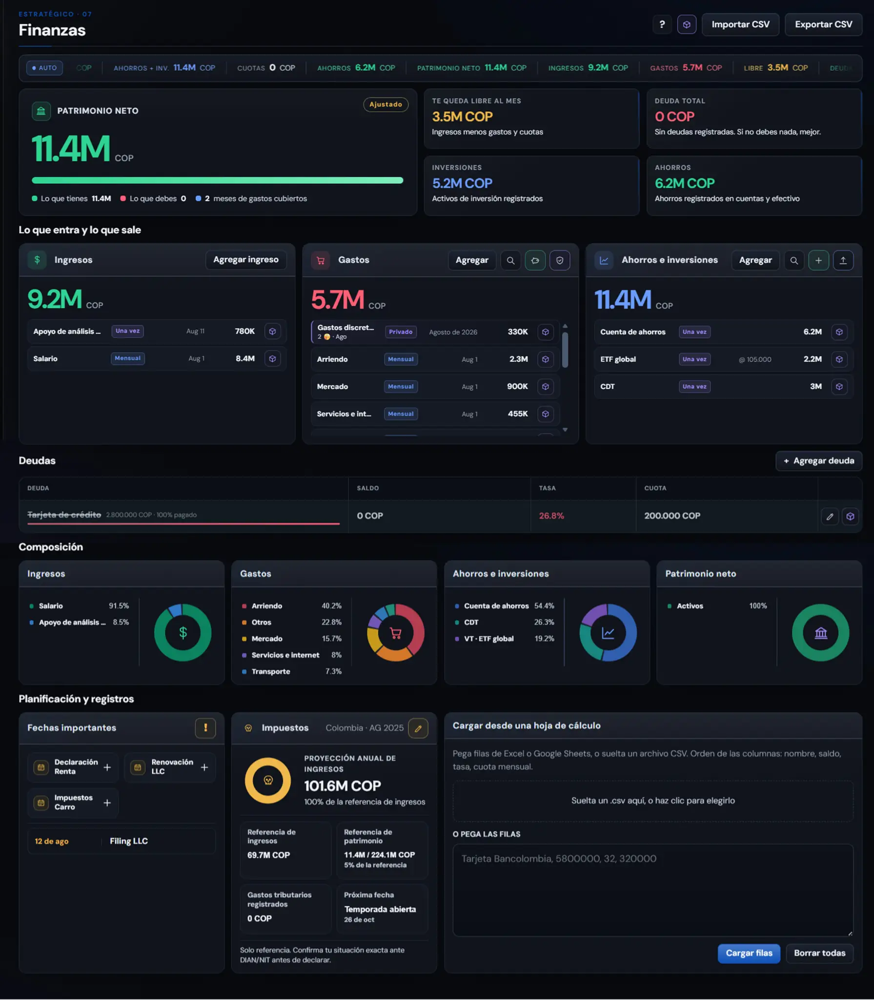

Dirección, ejecución y dinero comparten el mismo mapa. Puedes bajar de una meta a la acción del día sin reconstruir el contexto.
Tu sistema personal
Decide qué importa. Haz que avance.
Tungsten conecta proyectos, metas, hábitos, finanzas y progreso en una misma estructura. Lo que decides a largo plazo baja hasta el día; lo que haces hoy vuelve como evidencia de avance.
Datos localesCopias bajo tu controlSin telemetría

Proyectos y metas separan el trabajo de la llegada: qué estás construyendo, qué resultado buscas y qué sigue después.
Hábitos, calendario y tareas convierten ese rumbo en acciones concretas. El tablero del día filtra el sistema hasta dejar solo lo ejecutable.
Momentum, rachas, niveles y métricas convierten la actividad en señal. No solo ves lo que hiciste: ves si el sistema se está moviendo.

Punto de partida
Empieza simple. Ajusta después.
Empieza con el nivel de estructura que tenga sentido hoy: configúralo tú, carga una propuesta preparada con IA o entra solo con la fecha. Después puedes cambiar proyectos, metas, hábitos y preferencias sin tener que empezar de nuevo.
✓
Configúralo túDefine desde el inicio lo que quieres mover, medir y repetir.
◇
Que una IA lo armeParte de una estructura preparada y ajústala antes o después de entrar.
→
Solo la fechaAbre el tablero vacío y añade estructura solo cuando te haga falta.

Un mapa que puedes ejecutar.PROYECTO → META → HÁBITO → PRINCIPIO
Tu sistema
Del proyecto al día. Sin perder el hilo.
Tungsten no trata proyectos, metas y hábitos como listas aisladas. Cada capa tiene una función y conserva su relación con las demás: el proyecto define el trabajo, la meta fija una llegada, el hábito sostiene la repetición y los principios mantienen el criterio cuando el plan cambia.
01
ProyectosTrabajo con alcance, tareas y un siguiente paso visible.
02
MetasResultados medibles que indican cuándo algo realmente cambió.
03
HábitosAcciones repetibles que ponen la dirección dentro del calendario.
04
PrincipiosReglas de decisión para cuando prioridades y circunstancias compiten.
Anillos
Lo esencial primero. Lo extra suma.
Los Anillos separan el mínimo que quieres proteger de todo lo que suma por encima. El día cuenta como completo cuando cumples tus esenciales; los extras reconocen más ejecución sin convertir cada jornada en una lista imposible de terminar.
Esenciales
Tu piso diario: pocos, claros y deliberadamente alcanzables.Extras
Suman momentum cuando tienes más capacidad, sin cambiar la regla base.
Una regla clara para el día.4/4 ESENCIAL · 5/7 EXTRA
El día no depende de improvisar cuánta carga es razonable sostener.
Si tienes más energía, sumas movimiento sin romper la regla base.
Esencial y extra se leen rápido, sin convertir el día en una lista eterna.
Comando
Ve el sistema completo. Decide dónde intervenir.
Comando es la vista para levantar la cabeza del día y revisar el sistema completo. Reúne momentum, métricas vinculadas a metas, próximas tareas y proyectos que empiezan a quedarse quietos para que puedas decidir dónde intervenir antes de perder el hilo.
MomentumCompara lo táctico, lo operacional y lo estratégico para ver dónde se concentra —o falta— movimiento.
Métricas vinculadasCada número puede vivir junto a la meta que representa; actualizas el dato sin separar la medida de su propósito.
AtenciónLos frentes que pierden movimiento aparecen juntos para que no dependas de recordarlos de memoria.

Finanzas
Tu dinero, dentro del mismo sistema.
Finanzas mantiene patrimonio, flujo mensual, ahorro, inversiones y deuda dentro del mismo sistema personal. La pantalla empieza por el panorama —qué tienes, qué debes y qué queda libre— y después baja a movimientos, composición, obligaciones y planificación cuando necesitas explicar el número.
- PatrimonioActivos y deuda juntos para leer el patrimonio neto sin hacer cuentas aparte.
- FlujoIngresos, gastos y cuotas muestran cuánto margen queda realmente cada mes.
- AhorroCuentas de ahorro e inversiones conservan su composición y sus aportes visibles.
- PlanificaciónDeudas, fechas importantes e impuestos viven junto al resto del panorama financiero.

El panorama primero. El movimiento después.PATRIMONIO · FLUJO · AHORRO · DEUDA
Criterio
No todo cabe en una métrica.
No todo se resuelve con una barra de progreso. Los principios funcionan como reglas de decisión visibles dentro del sistema: ayudan cuando dos prioridades compiten, cambia el plan o los números todavía no dicen qué conviene hacer.
01Principio
Ejecución
Disciplina
Haz lo acordado incluso cuando no hay impulso.
Sostiene la repetición
02Principio
Dirección
Claridad
Decide antes de llenar el día.
Ordena la atención
03Principio
Proceso
Paciencia
Deja que lo pequeño se acumule.
Protege el largo plazo
04Principio
Decisión
Criterio
No todo merece una respuesta inmediata.
Filtra lo urgente
Demo · 21 días
Ver demo21 días de ejemplo
Ver Tungsten en marcha.
La demo abre una instancia aislada con 21 días de historia: proyectos en marcha, hábitos registrados, tareas, métricas y finanzas con movimiento. Recorre varios días y cambia de módulo para ver cómo se comporta Tungsten cuando el sistema ya tiene contexto.
Datos de ejemploSistema completoSin tocar tus datos